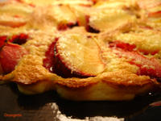

Cue the clafoutis
Summer sneaks up on us. It tiptoes in with the first 5:30 sunrise sometime in late spring, and it lies in wait with the green tomatoes, scrappy and promising. It doesn’t make a fuss; there’s no ruckus or fanfare. But slowly—so easy, instinctive, almost imperceptible—it takes over. With the first tentative jump of the thermometer, we slip off our long sleeves, our socks, our boots and pullovers and wool pants. The windows fall open; the blankets throw themselves back; and everything, whether by reason or reflex, warms and awakens. The onset of summer is, to hijack a (completely unrelated) quote by former U.S poet laureate Stanley Kunitz, “like stepping into the ocean when the temperature of the water is not much different from that of the air. You scarcely know, until you feel the undertow tug at you, that you have entered into another element.” Whether by way of a juice-heavy tomato; a flawless spicy-sweet peach; or maybe a black plum, shimmering darkly on a shady table, looking eerily like a sparkly lure at the end of a fishing line—when it comes to summer, we’re all an easy catch.
But between summer and me, it’s not so much a matter of luring and trapping: it’s more a mad embrace, half-hunger, half-hysteria. I may not be the quickest to feel the season’s tug, but when it comes, I throw myself at summer, and shamelessly so. I spit the pits out the window, lick avocado from the knife; I snare corn between my teeth and snag my fingers on the blackberry bush. I hold on tight while I can, because after all, I’m working with a finite deadline: just as quietly as it came, summer will go. It’s a system of catch and release, if you will. And if the calendar is to be believed, the release will come awfully soon.
To make the most of what little time we have, I cue the clafoutis, a classic country-French custard with a texture that straddles soufflé, popover, and flan. Its eggy, lightly sweet base is a perfect catch-all for summer fruits, especially those of the soft, fleshy variety. Whatever fruits you send its way, a clafoutis receives them gracefully, and fifty minutes later, it releases them transformed, bettered—soft, melting, resting lightly in their own sweet-tart juices.

Traditional clafoutis are made with cherries, preferably unpitted, but I’ve been known to veer more apricot, myself, especially when they’re at their rosy peak. That said, if pressed to play favorites, I’d likely fall into the pro-plum camp—at least this week. But the oven is preheated and the fork is on the table, and I won’t let summer sneak away without another clafoutis or two.
Black Plum Clafoutis
Adapted from Christopher Kimball at The New York Daily News
The Daily News version of this recipe calls for blueberries, but you should feel free to substitute any fruit you like, as I have. I’ve been known to use cherries, as per the classic recipe, but I’ve found myself more intrigued by the less strictly traditional: apricots, blackberries, Italian prune plums, or black plums, as I use here. In the fall and winter, thin slices or chunks of apple or pear work nicely, and I’ve heard tell of a prune clafoutis as well, for which the pitted dried fruits are first marinated overnight in armagnac. When it comes to serving, a clafoutis is delicious when still slightly warm from the oven, but I’ll freely admit to eating it straight from the fridge on the second day. It makes a luscious breakfast too, warm or cold.
3 medium black plums, pitted and cut into eight wedges each
3 large eggs
1/3 cup granulated sugar
1 cup whole milk
1 ½ tsp vanilla extract
A pinch of salt
½ cup unbleached, all-purpose flour
Powdered sugar, for serving
Preheat the oven to 350 degrees Fahrenheit, and lightly butter a 9-inch pie dish*. Arrange the plum wedges, skin side down, in a decorative pattern on the bottom of the dish.
Whisk the eggs and sugar in a medium bowl until pale yellow, about 1 minute. Add the milk, vanilla, and salt, and whisk to combine.
Sprinkle the flour over the batter, and whisk until smooth. Pour the batter gently over the plums, trying to disturb them as little as possible (some will float and move around no matter how gentle you are). Bake the clafoutis until puffed and nicely golden around the edges, about 45-50 minutes. Remove the clafoutis from the oven, and allow it to cool for a half hour or so, during which time you’ll see it deflate and settle a bit. Serve it warm or at room temperature, dusted with powdered sugar.
{kind=link}
Yield: 6-8 servings
* I used a 9-inch silicone tart mold.